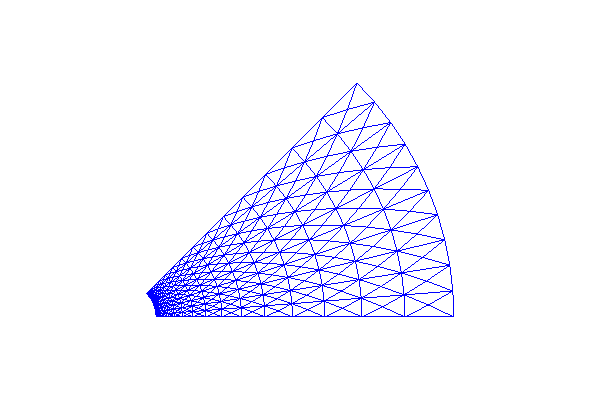

The major difference between deriving variational formulations in 2D and 3D compared to 1D is the rule for integrating by parts. The cells have shapes different from an interval, so basis functions look a bit different, and there is a technical difference in actually calculating the integrals over cells. Otherwise, going to 2D and 3D is not a big step from 1D. All the fundamental ideas still apply.
A typical second-order term in a PDE may be written in dimension-independent notation as $$ \nabla^2 u \quad\hbox{or}\quad \nabla\cdot\left( \dfc(\x)\nabla u\right) \tp $$ The explicit forms in a 2D problem become $$ \nabla^2 u = \nabla\cdot\nabla u = \frac{\partial^2 u}{\partial x^2} + \frac{\partial^2 u}{\partial y^2}, $$ and $$ \nabla\cdot\left( a(\x)\nabla u\right) = \frac{\partial}{\partial x}\left( \dfc(x,y)\frac{\partial u}{\partial x}\right) + \frac{\partial}{\partial y}\left( \dfc(x,y)\frac{\partial u}{\partial y}\right) \tp $$ We shall continue with the latter operator as the former arises from just setting \( \dfc =1 \).
The general rule for integrating by parts is often referred to as Green's first identity: $$ \begin{equation} -\int_{\Omega} \nabla\cdot (\dfc(\x)\nabla u) v\dx = \int_{\Omega} \dfc(\x)\nabla u\cdot\nabla v \dx - \int_{\partial\Omega} a\frac{\partial u}{\partial n} v \ds, \tag{225} \end{equation} $$ where \( \partial\Omega \) is the boundary of \( \Omega \) and \( \partial u/\partial n = \normalvec\cdot\nabla u \) is the derivative of \( u \) in the outward normal direction, \( \normalvec \) being an outward unit normal to \( \partial\Omega \). The integrals \( \int_\Omega ()\dx \) are area integrals in 2D and volume integrals in 3D, while \( \int_{\partial\Omega} ()\ds \) is a line integral in 2D and a surface integral in 3D.
It will be convenient to divide the boundary into two parts:
Here is a quite general, stationary, linear PDE arising in many problems: $$ \begin{align} \tag{226} \v\cdot\nabla u + \beta u &= \nabla\cdot\left( \dfc\nabla u\right) + f, \quad\x\in\Omega,\\ \tag{227} u &= u_0,\quad\x\in\partial\Omega_D,\\ \tag{228} -\dfc\frac{\partial u}{\partial n} &= g,\quad\x\in\partial\Omega_N \tp \end{align} $$ The vector field \( \v \) and the scalar functions \( a \), \( \alpha \), \( f \), \( u_0 \), and \( g \) may vary with the spatial coordinate \( \x \) and must be known.
Such a second-order PDE needs exactly one boundary condition at each point of the boundary, so \( \partial\Omega_N\cup\partial\Omega_D \) must be the complete boundary \( \partial\Omega \).
Assume that the boundary function \( u_0(\x) \) is defined for all \( \x\in\Omega \). The unknown function can then be expanded as $$ u = B + \sum_{j\in\If} c_j\baspsi_j,\quad B = u_0 \tp $$ As long as any \( \baspsi_j=0 \) on \( \partial\Omega_D \), we realize that \( u=u_0 \) on \( \partial\Omega_D \).
The variational formula is obtained from Galerkin's method, which technically means multiplying the PDE by a test function \( v \) and integrating over \( \Omega \): $$ \int_{\Omega} (\v\cdot\nabla u + \beta u)v\dx = \int_{\Omega} \nabla\cdot\left( \dfc\nabla u\right)\dx + \int_{\Omega}fv \dx \tp $$ The second-order term is integrated by parts, according to the formula (225): $$ \int_{\Omega} \nabla\cdot\left( \dfc\nabla u\right)v \dx = -\int_{\Omega} \dfc\nabla u\cdot\nabla v\dx + \int_{\partial\Omega} \dfc\frac{\partial u}{\partial n} v\ds \tp $$ Galerkin's method therefore leads to $$ \int_{\Omega} (\v\cdot\nabla u + \beta u)v\dx = -\int_{\Omega} \dfc\nabla u\cdot\nabla v\dx + \int_{\partial\Omega} \dfc\frac{\partial u}{\partial n} v\ds + \int_{\Omega} fv \dx \tp $$ The boundary term can be developed further by noticing that \( v\neq 0 \) only on \( \partial\Omega_N \), $$ \int_{\partial\Omega} \dfc\frac{\partial u}{\partial n} v\ds = \int_{\partial\Omega_N} \dfc\frac{\partial u}{\partial n} v\ds, $$ and that on \( \partial\Omega_N \), we have the condition \( a\frac{\partial u}{\partial n}=-g \), so the term becomes $$ -\int_{\partial\Omega_N} gv\ds\tp $$ The final variational form is then $$ \int_{\Omega} (\v\cdot\nabla u + \beta u)v\dx = -\int_{\Omega} \dfc\nabla u\cdot\nabla v \dx - \int_{\partial\Omega_N} g v\ds + \int_{\Omega} fv \dx \tp $$
Instead of using the integral signs, we may use the inner product notation: $$ (\v\cdot\nabla u, v) + (\beta u,v) = - (\dfc\nabla u,\nabla v) - (g,v)_{N} + (f,v) \tp $$ The subscript \( \,{}_N \) in \( (g,v)_{N} \) is a notation for a line or surface integral over \( \partial\Omega_N \), while \( (\cdot,\cdot) \) is the area/volume integral over \( \Omega \).
We can derive explicit expressions for the linear system for \( \sequencej{c} \) that arises from the variational formulation. Inserting the \( u \) expansion results in $$ \begin{align*} \sum_{j\in\If} ((\v\cdot\nabla \baspsi_j, \baspsi_i) &+ (\beta \baspsi_j ,\baspsi_i) + (\dfc\nabla \baspsi_j,\nabla \baspsi_i))c_j = \\ & (g,\baspsi_i)_{N} + (f,\baspsi_i) - (\v\cdot\nabla u_0, \baspsi_i) + (\beta u_0 ,\baspsi_i) + (\dfc\nabla u_0,\nabla \baspsi_i) \tp \end{align*} $$ This is a linear system with matrix entries $$ A_{i,j} = (\v\cdot\nabla \baspsi_j, \baspsi_i) + (\beta \baspsi_j ,\baspsi_i) + (\dfc\nabla \baspsi_j,\nabla \baspsi_i) $$ and right-hand side entries $$ b_i = (g,\baspsi_i)_{N} + (f,\baspsi_i) - (\v\cdot\nabla u_0, \baspsi_i) + (\beta u_0 ,\baspsi_i) + (\dfc\nabla u_0,\nabla \baspsi_i), $$ for \( i,j\in\If \).
In the finite element method, we usually express \( u_0 \) in terms of basis functions and restrict \( i \) and \( j \) to run over the degrees of freedom that are not prescribed as Dirichlet conditions. However, we can also keep all the \( \sequencej{c} \) as unknowns, drop the \( u_0 \) in the expansion for \( u \), and incorporate all the known \( c_j \) values in the linear system. This has been explained in detail in the 1D case, and the technique is the same for 2D and 3D problems.
The real power of the finite element method first becomes evident when we want to solve partial differential equations posed on two- and three-dimensional domains of non-trivial geometric shape. As in 1D, the domain \( \Omega \) is divided into \( N_e \) non-overlapping cells. The elements have simple shapes: triangles and quadrilaterals are popular in 2D, while tetrahedra and box-shapes elements dominate in 3D. The finite element basis functions \( \basphi_i \) are, as in 1D, polynomials over each cell. The integrals in the variational formulation are, as in 1D, split into contributions from each cell, and these contributions are calculated by mapping a physical cell, expressed in physical coordinates \( \x \), to a reference cell in a local coordinate system \( \X \). This mapping will now be explained in detail.
We consider an integral of the type $$ \begin{equation} \int_{{\Omega}^{(e)}} \dfc(\x)\nabla\basphi_i\cdot\nabla\basphi_j\dx, \tag{229} \end{equation} $$ where the \( \basphi_i \) functions are finite element basis functions in 2D or 3D, defined in the physical domain. Suppose we want to calculate this integral over a reference cell, denoted by \( \tilde\Omega^r \), in a coordinate system with coordinates \( \X = (X_0, X_1) \) (2D) or \( \X = (X_0, X_1, X_2) \) (3D). The mapping between a point \( \X \) in the reference coordinate system and the corresponding point \( \x \) in the physical coordinate system is given by a vector relation \( \x(\X) \). The corresponding Jacobian, \( J \), of this mapping has entries $$ J_{i,j}=\frac{\partial x_j}{\partial X_i}\tp $$
The change of variables requires \( \dx \) to be replaced by \( \det J\dX \). The derivatives in the \( \nabla \) operator in the variational form are with respect to \( \x \), which we may denote by \( \nabla_{\x} \). The \( \basphi_i(\x) \) functions in the integral are replaced by local basis functions \( \refphi_r(\X) \) so the integral features \( \nabla_{\x}\refphi_r(\X) \). We readily have \( \nabla_{\X}\refphi_r(\X) \) from formulas for the basis functions in the reference cell, but the desired quantity \( \nabla_{\x}\refphi_r(\X) \) requires some efforts to compute. All the details are provided below.
Let \( i=q(e,r) \) and consider two space dimensions. By the chain rule, $$ \frac{\partial \refphi_r}{\partial X} = \frac{\partial \basphi_i}{\partial X} = \frac{\partial \basphi_i}{\partial x}\frac{\partial x}{\partial X} + \frac{\partial \basphi_i}{\partial y}\frac{\partial y}{\partial X}, $$ and $$ \frac{\partial \refphi_r}{\partial Y} = \frac{\partial \basphi_i}{\partial Y} = \frac{\partial \basphi_i}{\partial x}\frac{\partial x}{\partial Y} + \frac{\partial \basphi_i}{\partial y}\frac{\partial y}{\partial Y} \tp $$ We can write these two equations as a vector equation $$ \left[\begin{array}{c} \frac{\partial \refphi_r}{\partial X}\\ \frac{\partial \refphi_r}{\partial Y} \end{array}\right] = \left[\begin{array}{cc} \frac{\partial x}{\partial X} & \frac{\partial y}{\partial X}\\ \frac{\partial x}{\partial Y} & \frac{\partial y}{\partial Y} \end{array}\right] \left[\begin{array}{c} \frac{\partial \basphi_i}{\partial x}\\ \frac{\partial \basphi_i}{\partial y} \end{array}\right] $$ Identifying $$ \nabla_{\X}\refphi_r = \left[\begin{array}{c} \frac{\partial \refphi_r}{\partial X}\\ \frac{\partial \refphi_r}{\partial Y} \end{array}\right], \quad J = \left[\begin{array}{cc} \frac{\partial x}{\partial X} & \frac{\partial y}{\partial X}\\ \frac{\partial x}{\partial Y} & \frac{\partial y}{\partial Y} \end{array}\right], \quad \nabla_{\x}\basphi_r = \left[\begin{array}{c} \frac{\partial \basphi_i}{\partial x}\\ \frac{\partial \basphi_i}{\partial y} \end{array}\right], $$ we have the relation $$ \nabla_{\X}\refphi_r = J\cdot\nabla_{\x}\basphi_i,$$ which we can solve with respect to \( \nabla_{\x}\basphi_i \): $$ \begin{equation} \nabla_{\x}\basphi_i = J^{-1}\cdot\nabla_{\X}\refphi_r\tp \tag{230} \end{equation} $$ On the reference cell, \( \basphi_i(\x) = \refphi_r(\X) \), so $$ \begin{equation} \nabla_{\x}\refphi_r(\X) = J^{-1}(\X)\cdot\nabla_{\X}\refphi_r(\X)\tp \tag{231} \end{equation} $$
This means that we have the following transformation of the integral in the physical domain to its counterpart over the reference cell: $$ \begin{equation} \int_{\Omega^{(e)}} \dfc(\x)\nabla_{\x}\basphi_i\cdot\nabla_{\x}\basphi_j\dx = \int_{\tilde\Omega^r} \dfc(\x(\X))(J^{-1}\cdot\nabla_{\X}\refphi_r)\cdot (J^{-1}\cdot\nabla\refphi_s)\det J\dX \tag{232} \end{equation} $$
Integrals are normally computed by numerical integration rules. For multi-dimensional cells, various families of rules exist. All of them are similar to what is shown in 1D: \( \int f \dx\approx \sum_jw_if(\x_j) \), where \( w_j \) are weights and \( \x_j \) are corresponding points.
The file numint.py contains the functions
quadrature_for_triangles(n) and quadrature_for_tetrahedra(n),
which returns lists of points and weights corresponding to integration
rules with n points over the reference triangle
with vertices \( (0,0) \), \( (1,0) \), \( (0,1) \), and the reference tetrahedron
with vertices \( (0,0,0) \), \( (1,0,0) \), \( (0,1,0) \), \( (0,0,1) \),
respectively. For example, the first two rules for integration over
a triangle have 1 and 3 points:
>>> import numint
>>> x, w = numint.quadrature_for_triangles(num_points=1)
>>> x
[(0.3333333333333333, 0.3333333333333333)]
>>> w
[0.5]
>>> x, w = numint.quadrature_for_triangles(num_points=3)
>>> x
[(0.16666666666666666, 0.16666666666666666),
(0.66666666666666666, 0.16666666666666666),
(0.16666666666666666, 0.66666666666666666)]
>>> w
[0.16666666666666666, 0.16666666666666666, 0.16666666666666666]
We shall now provide some formulas for piecewise linear \( \basphi_i \) functions and their integrals in the physical coordinate system. These formulas make it convenient to compute with P1 elements without the need to work in the reference coordinate system and deal with mappings and Jacobians. A lot of computational and algorithmic details are hidden by this approach.
Let \( \Omega^{(e)} \) be cell number \( e \), and let the three vertices have global vertex numbers \( I \), \( J \), and \( K \). The corresponding coordinates are \( (\xno{I},\yno{I}) \), \( (\xno{J},\yno{J}) \), and \( (\xno{K},\yno{K}) \). The basis function \( \basphi_I \) over \( \Omega^{(e)} \) have the explicit formula $$ \begin{equation} \basphi_I (x,y) = \half\Delta \left( \alpha_I + \beta_Ix + \gamma_Iy\right), \tag{233} \end{equation} $$ where $$ \begin{align} \alpha_I &= \xno{J}\yno{K} - \xno{K}\yno{J}, \tag{234}\\ \beta_I &= \yno{J} - \yno{K}, \tag{235}\\ \gamma_I &= \xno{K} - \xno{J}, \tag{236}, \end{align} $$ and $$ \begin{equation} 2\Delta = \det\left(\begin{array}{rrr} 1 & \xno{I} & \yno{I} \\ 1 & \xno{J} & \yno{J} \\ 1 & \xno{K} & \yno{K} \end{array}\right) \tp \tag{237} \end{equation} $$ The quantity \( \Delta \) is the area of the cell.
The following formula is often convenient when computing element matrices and vectors: $$ \begin{equation} \int_{\Omega^{(e)}} \basphi_I^{p}\basphi_J^{q}\basphi_K^{r} dx dy = {p!q!r!\over (p+q+r+2)!}2\Delta \tag{238} \tp \end{equation} $$ (Note that the \( q \) in this formula is not to be mixed with the \( q(e,r) \) mapping of degrees of freedom.)
As an example, the element matrix entry \( \int_{\Omega^{(e)}} \basphi_I\basphi_J\dx \) can be computed by setting \( p=q=1 \) and \( r=0 \), when \( I\neq J \), yielding \( \Delta/12 \), and \( p=2 \) and \( q=r=0 \), when \( I=J \), resulting in \( \Delta/6 \). We collect these numbers in a local element matrix: $$ \frac{\Delta}{12} \left[\begin{array}{ccc} 2 & 1 & 1\\ 1 & 2 & 1\\ 1 & 1 & 2 \end{array}\right] $$
The common element matrix entry \( \int_{\Omega^{(e)}} \nabla\basphi_I\cdot\nabla\basphi_J\dx \), arising from a Laplace term \( \nabla^2u \), can also easily be computed by the formulas above. We have $$ \nabla\basphi_I\cdot\nabla\basphi_J = \frac{\Delta^2}{4}(\beta_I\beta_J + \gamma_I\gamma_J) = \hbox{const},$$ so that the element matrix entry becomes \( \frac{1}{4}\Delta^3(\beta_I\beta_J + \gamma_I\gamma_J) \).
From an implementational point of view, one will work with local vertex numbers \( r=0,1,2 \), parameterize the coefficients in the basis functions by \( r \), and look up vertex coordinates through \( q(e,r) \).
Similar formulas exist for integration of P1 elements in 3D.
Almost all books on the finite element method that introduces the abstract variational problem \( a(u,v)=L(v) \) spend considerable pages on deriving error estimates and other properties of the approximate solution. The machinery with function spaces and bilinear and linear forms has the great advantage that a very large class of PDE problems can be analyzed in a unified way. This feature is often taken as an advantage of finite element methods over finite difference and volume methods. Since there are so many excellent textbooks on the mathematical properties of finite element methods [6] [4] [3] [1] [9] [2], this text will not repeat the theory, but give a glimpse of typical assumptions and general results for elliptic PDEs.
Remark. The mathematical theory of finite element methods is primarily developed for to stationary PDE problems of elliptic nature whose solutions are smooth. However, such problems can be solved with the desired accuracy by most numerical methods and pose no difficulties. Time-dependent problems, on the other hand, easily lead to non-physical features in the numerical solutions and therefore requires more care and knowledge by the user. Our focus on the accuracy of the finite element method will of this reason be centered around time-dependent problems, but then we need a different set of tools for the analysis. These tools are based on converting finite element equations to finite difference form and studying Fourier wave components.
(kam 15: This is really two remarks in one and we can split and put them in more appropriate place. Time is dealt with later.)
To list the main results from the mathematical theory of finite elements, we consider linear PDEs with an abstract variational form $$ a(u,v) = L(v)\quad\forall v\in V\tp$$ This is the discretized problem (as usual in this book) where we seek \( u\in V \). The weak formulation of the corresponding continuous problem, fulfilled by the exact solution \( \uex\in\Vex \) is here written as $$ a(\uex, v) = L(v)\quad\forall v\in\Vex\tp$$ The space \( V \) is finite dimensional (with dimension \( N+1 \)), while \( \Vex \) is infinite dimensional. Normally The hope is that \( u\rightarrow\uex \) as \( N\rightarrow\infty \) and \( V\rightarrow\Vex \).
Consider the problem \( -u''(x)=f(x) \) on \( \Omega=[0,1] \), with \( u(0)=0 \) and \( u'(1)=\beta \). The weak form is $$ a(u,v) = \int_0^1 u'v'dx,\quad L(v)=\int_0^1fvdx + \beta v(1)\tp$$ The space \( V \) for the approximate solution \( u \) can be chosen in many ways as previously described. The exact solution \( \uex \) fulfills \( a(u,v)=L(v) \) for all \( v \) in \( \Vex \), and to specify what \( \Vex \) is, we need to introduce Hilbert spaces. The Hilbert space \( L^2(\Omega) \) consists of all functions that are square-integrable on \( \Omega \): $$ L^2(\Omega) = \left\lbrace\int_\Omega v^2dx < \infty\right\rbrace\tp$$ The space \( \Vex \) is the space of all functions whose first-order derivative is also square-integrable: $$ \Vex = H^1_0(\Omega) = \left\lbrace v\in L^2(\Omega)\,\vert\, \frac{dv}{dx}\in L^2(\Omega),\hbox{ and }v(0)=0\right\rbrace\tp$$ The requirements of square-integrable zeroth- and first-order derivatives are motivated from the formula for \( a(u,v) \) where products of the first-order derivatives are to be integrated on \( \Omega \). We remark that it is common that \( H^1_0 \) denote the space of \( H^1 \) functions that are zero everywhere on the boundary, but here we use it for functions that are zero only at \( x=0 \).
The Sobolev space \( H^1_0(\Omega) \) has an inner product $$ (u,v)_{H^1} = \int_\Omega (uv + \frac{du}{dx}\frac{dv}{dx})dx,$$ and associated norm $$ ||v||_{H^1} = \sqrt{(v,v)_{H^1}}\tp$$
A set of general results builds on the following assumptions. Let \( \Vex \) be an infinite-dimensional inner-product space such that \( \uex\in\Vex \). The space has an associated norm \( ||v|| \) (e.g., \( ||v||_{H^1} \) in the example above with \( \Vex=H^1_0(\Omega) \)).
There exists a unique solution of the problem: find \( \uex\in\Vex \) such that $$ a(\uex,v)=L(v)\quad\forall v\in\Vex\tp$$ (This result is known as the Lax-Milgram Theorem. We remark that symmetry is not strictly needed for this theorem.)
The solution \( \uex\in\Vex \) obeys the stability estimate $$ ||u||\leq \frac{c_0}{c_2}\tp$$
The solution \( \uex\in\Vex \) also fulfills the minimization problem $$ \min_{v\in\Vex} F(v),\quad F(v)=\frac{1}{2}a(v,v) - L(v)\tp$$
The energy norm is defined as $$ ||v||_a = \sqrt{a(v,v)}\tp$$ The discrete solution \( u\in V \) is the best approximation in energy norm, $$ ||\uex - u||_a \leq ||\uex - v||_a\quad\forall v\in V\tp$$ This is quite remarkable: once we have \( V \) (i.e., a mesh and a finite element), the Galerkin method finds the best approximation in this space. In the example above, we have \( ||v||_a=\int_0^1 (v')^2dx \), so the derivative \( u' \) is closer to \( \uex' \) than any other possible function in \( V \): $$ \int_0^1 (\uex' - u')^2dx \leq \int_0^1(u' - v')dx\quad\forall v\in V\tp$$
If \( ||v|| \) is the norm associated with \( \Vex \), we have another best approximation property: $$ ||\uex - u||\leq\left(\frac{c_1}{c_2}\right)^{\half}||\uex - v||\quad\forall v\in\V\tp$$
The discrete problem \( a(u,v)=L(v) \) $\forall v\in V$ leads to a linear system \( Ac=b \), where the coefficient matrix \( A \) is symmetric (\( A^T=A \)) and positive definite (\( x^TAx > 0 \) for all vectors \( x\neq 0 \)). One can then use solution methods that demand less storage and that are faster and more reliable than solvers for general linear systems. One is also guaranteed the existence and uniqueness of the discrete solution \( u \).
The solution \( c \) of the linear system \( Ac=b \) also solves the minimization problem \( \min_w(\half w^TAw - b^Tw \) in the vector space \( \Real^{N+1} \).
In our sample problem, \( -u''=f \) on \( \Omega=[0,1] \), \( u(0)=0 \), \( u'(1)=\beta \), one can derive the following error estimate for Lagrange finite element approximations of degree \( s \): $$ \left(\int_0^1 (\uex' - u')^2dx\right)^{\half} \leq Ch^s||\uex||_{H^{s+1}},\\ $$ where \( ||u||_{H^{s+1}} \) is a norm that integrates the sum of the square of all derivatives up to order \( s+1 \), \( C \) is a constant, and \( h \) is the maximum cell length. The estimate shows that choosing elements with higher-degree polynomials (large \( s \)) requires more smoothness in \( \uex \) since higher-order derivatives need to be square-integrable.
A consequence of the error estimate is that \( u'\rightarrow \uex' \) as \( h\rightarrow 0 \), i.e., the approximate solution converges to the exact one.
The constant \( C \) in depends on the shape of triangles in 2D and tetrahedra in 3D: squeezed elements with a small angle lead to a large \( C \), and such deformed elements are not favorable for the accuracy.
One can generalize the above estimate to the general problem class \( a(u,v)=L(v) \): the error in the derivative is proportional to \( h^s \). Note that the expression \( ||\uex - u|| \) in the example is \( ||\uex - u||_{H^1} \) so it involves the sum of the zeroth and first derivative. The appearance of the derivative makes the error proportional to \( h^s \) - if we only look at the solution it converges as \( h^{s+1} \) (see below).
The above estimate is called an a priori estimate because the bound contains the exact solution, which is not computable. There are also a posteriori estimates where the bound involves the approximation \( u \), which is available in computations.
The finite element solution of our sample problem fulfills $$ ||\uex - u|| \leq Ch^{s+1} ||\uex||_{H^{s+1}}, $$ This estimate shows that the error converges as \( h^2 \) for P1 elements. An equivalent finite difference method, see the section Comparison with a finite difference discretization, is known to have an error proportional to \( h^2 \), so the above estimate is expected. In general, the convergence is \( h^{s+1} \) for elements with polynomials of degree \( s \). Note that the estimate for \( u' \) is proportional to \( h \) raised to one power less. We remark that the second estimate strictly speaking requires extra smoothness (regularity).
From a principle of view, we have seen that variational forms of the type: find \( a(u,v)=L\ \forall v\in V \) (and even general nonlinear problems \( F(u;v)=0 \)), can apply the computational machinery of introduced for the approximation problem \( u=f \). We actually need two extensions only:
Therefore, if we know how to set up an approximation problem in any dimension in FEniCS, and know how to derive variational forms in higher dimensions, we are (in principle!) very close to solving a PDE problem in FEniCS. Building on the the section Implementation, we shall now solve a quite general 1D/2D/3D Poisson problem in FEniCS. There is very much more FEniCS programming than this example, but it illustrates our fact that when we go beyond 1D, there is exists software which leverage the full power of the finite element method as a method for solving "any" problem in any number of space dimensions.
The following model describes the pressure \( u \) in the flow around a bore hole of radius \( a \) in a porous medium. If the hole is long in the vertical direction, we can model it by a 2D domain in the cross section. $$ \begin{alignat}{2} \nabla\cdot \left( \dfc\nabla u\right) &= 0, & \quad a < ||\x|| < b, \tag{239}\\ u(\x) &= U_a, \quad & ||\x|| = a, \tag{240}\\ u(\x) &= U_b \quad & ||\x|| = b\tp \tag{241} \end{alignat} $$ That is, we have a hollow circular 2D domain with inner radius \( a \) and outer radius \( b \). The pressure is known on these two boundaries, so this is a pure Dirichlet problem.
The first thing we should observe is that the problem is radially symmetric, so we can change to polar coordinates and obtain a 1D problem in the radial direction: $$ (r\dfc u')' = 0,\quad u(a)=U_a, u(b)=U_b\tp$$ This is not very exciting beyond being able to find an analytical solution and compute the true error of a finite element approximation.
However, many software packages solve problems in Cartesian coordinates, and FEniCS basically do this, so we want to take advantage of symmetry in Cartesian coordinates and reformulate the problem in a smaller domain.
Looking at the domain as a cake with a hole, any piece of the cake will be a candidate for a reduced-size domain. The solution is symmetric about any line \( \theta = \hbox{const} \) in polar coordinates, so at such lines we have the symmetry boundary condition \( \partial u/\partial n=0 \), i.e., a homogeneous Neumann condition. In Figure 67 we have plotted a possible mesh of cells as triangles, here with dense refinement toward the bore hole, because we know the solution will decay most rapidly toward the origin. This mesh is a piece of the cake with four sides: Dirichlet conditions on the inner and outer boundary, named \( \Gamma_{D_a} \) and \( \Gamma_{D_b} \), and \( \partial u/\partial n=0 \) on the two other sides, named \( \Gamma_N \). In this particular example, the arc of the piece of the cake is 45 degrees, but any value of the arc will work.
Figure 67: Mesh of a hollow cylinder, with refinement and utilizing symmetry.

The boundary problem can then be expressed as $$ \begin{alignat}{2} \nabla\cdot \left( \dfc\nabla u\right) &= 0, & \quad \x\in\Omega, \tag{242}\\ u(\x) &= U_a, \quad & \x\in\Gamma_{D_a}, \tag{243}\\ u(\x) &= U_b, \quad & \x\in\Gamma_{D_b}, \tag{244}\\ \frac{\partial u}{\partial n} &=0,\quad & \x\in\Gamma_N\tp \tag{245} \end{alignat} $$
To obtain the variational formulation, we multiply the PDE by a test function \( v \) and integrate the second-order derivatives by part: $$ \begin{align*} \int_\Omega \nabla\cdot (\dfc\nabla u) v \dx &= 0,\quad \forall v\in V\\ &= -\int_\Omega \dfc\nabla u\cdot\nabla v\dx + \int_{\Gamma_N}\dfc \frac{\partial u}{\partial n}v\ds\\ &= -\int_\Omega \dfc\nabla u\cdot\nabla v\dx\tp \end{align*} $$ We are left with a problem of the form: find \( u \) such that \( a(u,v)=L(v)\ \forall v\in V \), with $$ \begin{align} a(u,v) &= \int_\Omega \dfc\nabla u\cdot\nabla v\dx, \tag{246}\\ L(v) &= \int_\Omega 0v\dx \tp \tag{247} \end{align} $$ We write the integrand as \( 0v\dx \) even though \( L=0 \), because it is necessary in FEniCS to specify \( L \) as a linear form and not the number zero. The Dirichlet conditions make a nonzero solution.
Suppose we have a function make_mesh that can make the mesh for us.
All we need to do in the solver and that has not been exemplified
before, is to define \( V \) with proper Dirichlet conditions.
It is easy to do so as long as the Neumann conditions are zero. Otherwise,
we will have to do a line integral along the boundary and that brings in
quite some concepts in FEniCS about how to mark boundaries [7].
Fortunately, a lot of problems have homogeneous Neumann conditions (thanks
to symmetries!), so the example here can be extended and become useful
in many contexts.
We have to write functions for testing whether a point is on a Dirichlet boundary or not:
V = FunctionSpace(mesh, 'P', degree)
# Define Dirichlet boundary conditions
from math import sqrt
def inner(x, on_boundary):
"""Return True if x on r=a with tolerance."""
r = on_boundary and \
abs(sqrt(x[0]**2 + x[1]**2) - x_a) < 1E-2
print 'XXXa', r, x[0], x[1], abs(sqrt(x[0]**2 + x[1]**2) - x_a), on_boundary
return r
def outer(x, on_boundary):
"""Return True if x on r=b with tolerance."""
r = on_boundary and \
abs(sqrt(x[0]**2 + x[1]**2) - x_b) < 1E-2
print 'XXXb', r, x[0], x[1], abs(sqrt(x[0]**2 + x[1]**2) - x_b), on_boundary
return r
We then use the DirichletBC object to make different kinds of
Dirichlet conditions, here two, and collect them in a list `bcs:
bc_inner = DirichletBC(V, u_a, inner)
bc_outer = DirichletBC(V, u_b, outer)
bcs = [bc_inner, bc_outer]
The next step is to define the variational problem and solve it:
# Define variational problem
u = TrialFunction(V)
v = TestFunction(V)
a = alpha*dot(grad(u), grad(v))*dx
L = Constant(0)*v*dx # L = 0*v*dx = 0 does not work...
# Compute solution
u = Function(V)
solve(a == L, u, bcs)
f = File("mesh.xml")
f << mesh
L=0 (L equal to the float zero), we have to
tell FEniCS that is a linear form, so zero must be specified as Constant(0).
Note that everything is the same as for the approximation problem,
except for the Dirichlet conditions and the formulas for a and
L. FEniCS has, of course, access to very efficient solution methods,
so we could add arguments to the solve call to apply
state-of-the-art iterative methods and preconditioners for large-scale
problems. However, for this little 2D case a standard sparse Gaussian
elimination, as implied by solve(a = L, u, bcs) is the most
efficient and reliable approach.
Finally, we can save the solution to file for using professional
visualization software and, if desired, add a quick plotting using the
built-in FEniCS tool plot:
# Save solution to file in VTK format
vtkfile = File(filename + '.pvd')
vtkfile << u
u.rename('u', 'u'); plot(u); plot(mesh)
interactive()
u.rename call is just for getting a more readable title in the plot.)
The above statements are collected in a function solver in the
file borehole_fenics.py:
def solver(alpha, # Diffusion coefficient
u_a, # Inner pressure
u_b, # Outer pressure
Theta, # Arc size
x_a, # Inner boundary
x_b, # Outer boundary
nr, # Resolution r direction
nt, # Resolution azimuthal direction
degree, # Element polynomial degree
filename, # Name of VTK file
):
It is easy when coding mathematics to use variable names that correspond
to one-letter names in the mathematics. For example, in the mathematics
of this problem there are to \( a \) variables: the radius of the inner
boundary and the bilinear form in the variational formulation.
Using a for the inner boundary in solver does not work: it is
quickly overwritten by the bilinear form. We therefore have to introduce
x_a. Long variable names are to be preferred for safe programming,
though short names corresponding to the mathematics are nicer...
The hardest part of a finite element problem is very often to make the mesh. Here the idea is to first make a rectangle, then make the denser toward the left end, and then bend it to get the form of the part of a hole.
Let \( x \) and \( y \) be the coordinates of a vertex in the mesh that is a rectangle \( (0,a)\times (0,b) \). The stretching towards \( x=a \) is done by mapping $$ \begin{equation} \bar x = a + (b-a)\left({x-a\over b-a}\right)^s\tp \tag{248} \end{equation} $$ A stretching towards \( x=b \) is given by $$ \begin{equation} \bar x = a + (b-a)\left({x-a\over b-a}\right)^{1/s}\tp \tag{249} \end{equation} $$ The parameter \( s \) controls the amount of stretching. The code below shows the details of mapping the coordinates of FEniCS mesh.
Mapping of a rectangle onto a our geometry is done by $$ \begin{equation*} \hat x = \bar x\cos (\Theta \bar y),\quad \hat y = \bar x\sin (\Theta \bar y)\tp \end{equation*} $$
We are now ready for the Python code that codes these formulas and manipulates the FEniCS mesh:
def make_mesh(Theta, a, b, nr, nt):
mesh = RectangleMesh(Point(a, 0), Point(b, 1), nr, nt, 'crossed')
# First make a denser mesh towards r=a
x = mesh.coordinates()[:,0]
y = mesh.coordinates()[:,1]
s = 3.5
def denser(x, y):
return [a + (b-a)*((x-a)/(b-a))**s, y]
x_bar, y_bar = denser(x, y)
xy_bar_coor = np.array([x_bar, y_bar]).transpose()
mesh.coordinates()[:] = xy_bar_coor
# Map onto to a "piece of cake"
def cylinder(r, s):
return [r*np.cos(Theta*s), r*np.sin(Theta*s)]
x_hat, y_hat = cylinder(x_bar, y_bar)
xy_hat_coor = np.array([x_hat, y_hat]).transpose()
mesh.coordinates()[:] = xy_hat_coor
return mesh
We could also have used the mesh tool mshr in FEniCS, but with our
approach here we have full control of the refinement towards the hole.
We assume that \( \dfc \) is constant.
Before solving such
a specific problem, it can be wise to scale the problem since
it often reduces the amount of input data in the model. Here, the variation
in \( u \) is typically \( |u_a-u_b| \) so we use that as characteristic
pressure. The coordinates may be naturally scaled by the bore hole radius,
so we have new, scaled variables
$$ \bar u = \frac{u-u_a}{u_a-u_b},\quad \bar x = \frac{x}{a},\quad
\bar y = \frac{y}{a}\tp$$
Now, we expect \( \bar u\in [0,1] \), which is a goal of scaling.
Inserting this in the problem gives the PDE
$$ \nabla^2 \bar u = 0 $$
in a domain with inner radius 1 and \( \bar u=0 \), and outer radius
$$ \beta = \frac{a}{b},$$
with \( \bar u = 1 \). Our solver can solve this problem by setting
alpha=1, u_a=0, u_b=0, x_a=1, x_b=beta.
(hpl 16: Show plots from paraview.) (hpl 17: Do 3D automatically.) (hpl 18: Do 1D Dirichlet model problem from previous sections (exercise!).)